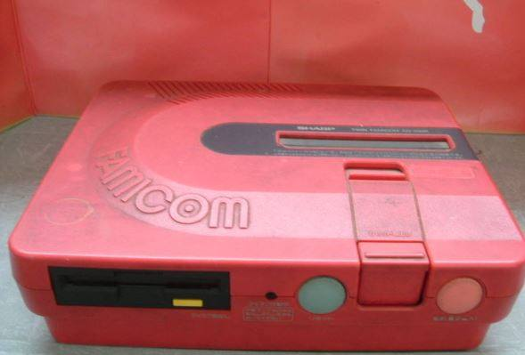
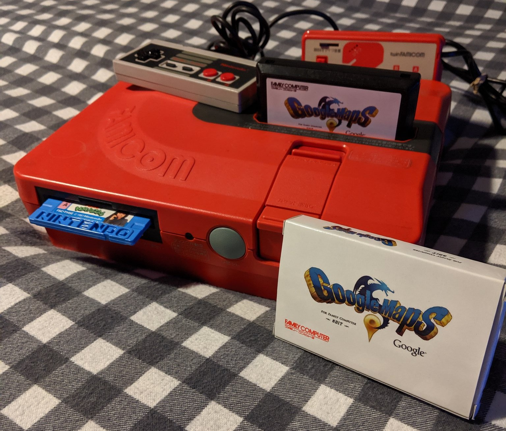
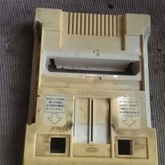
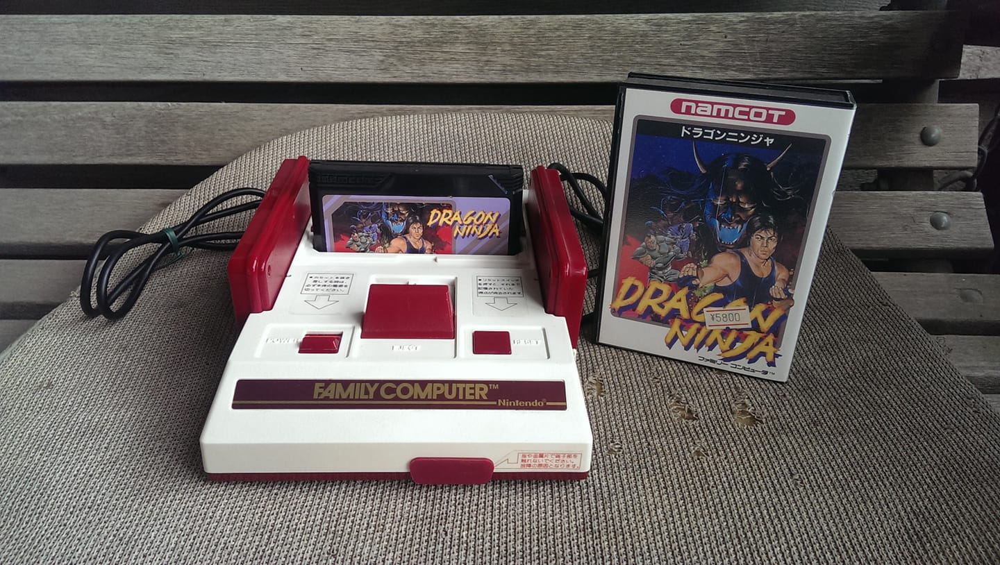

List of Portfolio Items
This is the first picture of what is in my portfolio
Video game system Repair and Cleaning

Before and After

Japanese Nintendo Twin Famicom System
Second Repair

Before and After

These are Japanese consoles that have been repaired and cleaned with deep cleaning and replacements of electronic components.
Contact Us
For more information, reach out via email at
jjones@stumail.jccc.edu